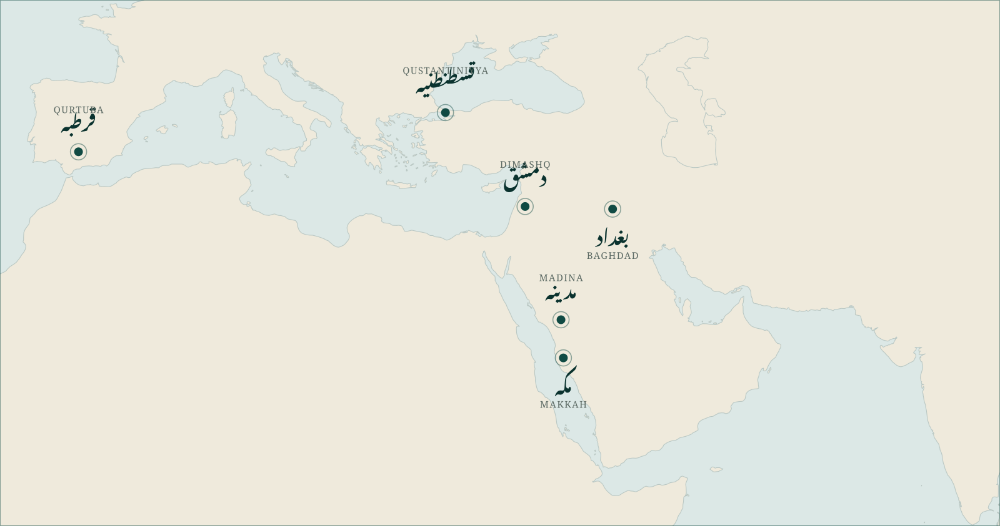

<title>Workbook — Week One</title>
<link rel="stylesheet" href="https://fonts.googleapis.com/css2?family=Spectral:wght@300;400;600&family=Archivo:wght@500;700&family=Noto+Nastaliq+Urdu:wght@400;600&display=swap">
<style>
:root{--paper:#FAF7F0;--ink:#1C2321;--teal:#104A43;--deep:#0A322E;--gold:#C49A45;--muted:#5A6862;--rule:rgba(16,74,67,.3);--faint:rgba(16,74,67,.13)}
*{box-sizing:border-box}
body{margin:0;background:#5A6862;font-family:"Spectral",Georgia,serif;color:var(--ink)}
.ur{font-family:"Jameel Noori Nastaleeq","Noto Nastaliq Urdu",serif;direction:rtl;unicode-bidi:isolate;line-height:2.1}
.lbl{font-family:"Archivo",system-ui,sans-serif;font-weight:700;font-size:9px;letter-spacing:.16em;text-transform:uppercase;color:var(--muted)}
.page{width:297mm;height:210mm;background:var(--paper);padding:14mm 16mm;margin:0 auto 8mm;position:relative;overflow:hidden;display:flex;flex-direction:column}
.page + .page{page-break-before:always}
.rule{height:1px;background:var(--rule);margin:6px 0}
.write{border-bottom:1px dotted var(--rule);height:1.05em}

/* cover */
.cover{justify-content:center;align-items:center;text-align:center}
.cover h1{font-family:"Jameel Noori Nastaleeq","Noto Nastaliq Urdu",serif;direction:rtl;font-size:64px;line-height:1.8;margin:0;color:var(--teal);font-weight:600}
.cover .en{font-size:22px;font-style:italic;color:var(--muted);margin:4px 0 30px}
.cover .own{font-size:30px;margin-top:26px}
.cover .own u{display:inline-block;min-width:230px;border-bottom:1px solid var(--rule);text-decoration:none}
.cover .note{margin-top:44px;max-width:150mm;font-size:14px;color:var(--muted);line-height:1.6}
.cover .epi{margin-top:30px;font-family:"Traditional Arabic","Amiri",serif;direction:rtl;font-size:26px;color:var(--deep)}
.cover .epi + .src{font-size:12px;color:var(--muted);margin-top:4px}

/* section head */
.head{display:flex;justify-content:space-between;align-items:baseline;margin-bottom:2mm}
.head h2{margin:0;font-family:"Jameel Noori Nastaleeq","Noto Nastaliq Urdu",serif;direction:rtl;font-size:34px;color:var(--teal);font-weight:600;line-height:1.9}
.instr{font-size:13px;color:var(--muted);font-style:italic;margin:0 0 3mm}

figure{margin:0;flex:1;display:flex;align-items:center;justify-content:center}
figure img{max-width:100%;max-height:100%;object-fit:contain}

/* profile panels */
.panels{display:grid;grid-template-columns:repeat(3,1fr);gap:6mm;flex:1}
.panel{border:1px solid var(--faint);padding:5mm;display:flex;flex-direction:column}
.panel .nm{font-family:"Jameel Noori Nastaleeq","Noto Nastaliq Urdu",serif;direction:rtl;font-size:26px;color:var(--teal);line-height:2;margin-bottom:1mm}
.panel .wk{font-family:"Archivo",sans-serif;font-size:9px;letter-spacing:.12em;text-transform:uppercase;color:var(--gold);font-weight:700;margin-bottom:3mm}
.panel .fld{margin-bottom:3mm}
.panel .fld .lbl{display:block;margin-bottom:1mm}
.panel .grow{flex:1;display:flex;flex-direction:column;justify-content:flex-start;gap:5.5mm;margin-top:1mm}

.bottom{display:grid;grid-template-columns:1.35fr 1fr;gap:8mm;margin-top:4mm}
.box{border:1px solid var(--faint);padding:4mm 5mm}
.box .lbl{display:block;margin-bottom:2mm}
.box .q{font-family:"Jameel Noori Nastaleeq","Noto Nastaliq Urdu",serif;direction:rtl;font-size:19px;color:var(--deep);line-height:2;margin-bottom:3mm}
.foot{position:absolute;bottom:7mm;left:16mm;right:16mm;display:flex;justify-content:space-between}

@media print{
  body{background:#fff}
  @page{size:A4 landscape;margin:0}
  .page{margin:0;box-shadow:none;-webkit-print-color-adjust:exact;print-color-adjust:exact}
}
</style>

<!-- ══════════ 1 · COVER ══════════ -->
<section class="page cover">
  <h1 class="ur">تاریخ سے سبق</h1>
  <p class="en">Lessons from History &middot; a ten-week course</p>
  <p class="own ur">یہ کتاب <u>&nbsp;</u> کی ہے</p>
  <p class="note ur">اِس کتاب کو ہر ہفتے ساتھ لائیے۔ دس ہفتے کے بعد یہ لکیر اور یہ نقشہ آپ کے اپنے ہاتھ سے بھرے ہوئے ہوں گے — اور یہی آپ گھر لے جائیں گے۔</p>
  <div class="epi">وَأَسْبَابِ مَبَادِئِ الدُّوَلِ وَإِقْبَالِهَا، ثُمَّ سَبَبِ انْقِرَاضِهَا</div>
  <div class="src">علامہ سخاوی رحمہ اللہ &middot; الإعلان بالتوبيخ، ص۱۱۱</div>
</section>

<!-- ══════════ 2 · THE LINE ══════════ -->
<section class="page">
  <div class="head">
    <h2 class="ur">وقت کی لکیر</h2>
    <span class="lbl">The Line &middot; ۶۳۲ &ndash; ۱۹۴۷</span>
  </div>
  <p class="instr">Eight pegs are printed. Everything else on this line you mark yourself, one evening at a time.</p>
  <figure>
    <svg viewBox="0 0 1500 460" width="100%" font-family="Archivo, system-ui, sans-serif">
      <line x1="60" y1="230" x2="1440" y2="230" stroke="#104A43" stroke-width="2.5"/>
      <g stroke="#104A43" stroke-width="2">
        <line x1="60"     y1="212" x2="60"     y2="248"/>
        <line x1="90.4"   y1="212" x2="90.4"   y2="248"/>
        <line x1="183.8"  y1="212" x2="183.8"  y2="248"/>
        <line x1="550.1"  y1="212" x2="550.1"  y2="248"/>
        <line x1="716.9"  y1="212" x2="716.9"  y2="248"/>
        <line x1="921.5"  y1="212" x2="921.5"  y2="248"/>
        <line x1="1415.9" y1="212" x2="1415.9" y2="248"/>
        <line x1="1440"   y1="212" x2="1440"   y2="248"/>
      </g>
      <g fill="#104A43"><circle cx="60" cy="230" r="6"/><circle cx="90.4" cy="230" r="6"/><circle cx="183.8" cy="230" r="6"/><circle cx="550.1" cy="230" r="6"/><circle cx="716.9" cy="230" r="6"/><circle cx="921.5" cy="230" r="6"/><circle cx="1415.9" cy="230" r="6"/><circle cx="1440" cy="230" r="6"/></g>
      <!-- staggered so the crowded ends stay legible -->
      <g font-size="22" fill="#0A322E" text-anchor="middle" font-family="Jameel Noori Nastaleeq, Noto Nastaliq Urdu, serif" direction="rtl">
        <text x="60"     y="150">خلافتِ راشدہ</text>
        <text x="90.4"   y="330">بنو امیہ</text>
        <text x="183.8"  y="105">بنو عباس</text>
        <text x="550.1"  y="150">صلیبی جنگیں</text>
        <text x="716.9"  y="330">سقوطِ بغداد</text>
        <text x="921.5"  y="150">فتحِ قسطنطنیہ</text>
        <text x="1415.9" y="105">خلافت کا خاتمہ</text>
        <text x="1440"   y="375">۱۹۴۷</text>
      </g>
      <!-- Hijri and CE kept in SEPARATE elements: mixing Urdu and Latin digits inside one
           RTL string makes the bidi algorithm reorder them into nonsense. -->
      <g font-size="15" fill="#0A322E" text-anchor="middle" direction="rtl"
         font-family="Jameel Noori Nastaleeq, Noto Nastaliq Urdu, serif">
        <text x="60"     y="176">۱۱ھ</text>
        <text x="90.4"   y="356">۴۰ھ</text>
        <text x="183.8"  y="131">۱۳۲ھ</text>
        <text x="550.1"  y="176">۴۹۲ھ</text>
        <text x="716.9"  y="356">۶۵۶ھ</text>
        <text x="921.5"  y="176">۸۵۷ھ</text>
        <text x="1415.9" y="131">۱۳۴۲ھ</text>
        <text x="1440"   y="401">۱۳۶۶ھ</text>
      </g>
      <g font-size="13" fill="#5A6862" text-anchor="middle" font-weight="700" letter-spacing="1.1">
        <text x="60"     y="194">632</text>
        <text x="90.4"   y="374">661</text>
        <text x="183.8"  y="149">750</text>
        <text x="550.1"  y="194">1099</text>
        <text x="716.9"  y="374">1258</text>
        <text x="921.5"  y="194">1453</text>
        <text x="1415.9" y="149">1924</text>
        <text x="1440"   y="419">1947</text>
      </g>
      <g stroke="#C49A45" stroke-width="1.2" stroke-dasharray="4 4">
        <line x1="60" y1="418" x2="1440" y2="418"/>
      </g>
      <text x="750" y="440" font-size="13" fill="#5A6862" text-anchor="middle" font-style="italic">to scale &middot; 1315 years</text>
    </svg>
  </figure>
  <div class="foot"><span class="lbl">نشست ۱</span><span class="lbl">صفحہ ۲</span></div>
</section>

<!-- ══════════ 3 · THE MAP ══════════ -->
<section class="page">
  <div class="head">
    <h2 class="ur">نقشہ</h2>
    <span class="lbl">The Map &middot; six anchor cities</span>
  </div>
  <p class="instr">Six cities are marked &mdash; learn these six and the rest of the course has somewhere to sit. Tonight you add two arrows, one west and one east. Draw them yourself; a map you drew is a map you keep.</p>
  <figure></figure>
  <div class="foot"><span class="lbl">نشست ۱</span><span class="lbl">صفحہ ۳</span></div>
</section>

<!-- ══════════ 4 · SESSION ONE ══════════ -->
<section class="page">
  <div class="head">
    <h2 class="ur">نشست ۱ &mdash; ایک نظر میں</h2>
    <span class="lbl">تعارف &middot; three people</span>
  </div>
  <p class="instr">Each of these three has their own evening later in the course. Write the incident in your own words &mdash; that is what makes it stick.</p>

  <div class="panels">
    <article class="panel">
      <div class="nm ur">سیدنا عمر الفاروق ؓ</div>
      <div class="wk">Session 2</div>
      <div class="fld"><span class="lbl">سنین</span><div class="write"></div></div>
      <div class="fld"><span class="lbl">کیا کیا &mdash; ایک جملہ</span><div class="write"></div><div class="write"></div></div>
      <div class="fld"><span class="lbl">ایک واقعہ</span></div>
      <div class="grow"><div class="write"></div><div class="write"></div><div class="write"></div><div class="write"></div></div>
    </article>
    <article class="panel">
      <div class="nm ur">ہلاکو خان</div>
      <div class="wk">Session 6</div>
      <div class="fld"><span class="lbl">سنین</span><div class="write"></div></div>
      <div class="fld"><span class="lbl">کیا کیا &mdash; ایک جملہ</span><div class="write"></div><div class="write"></div></div>
      <div class="fld"><span class="lbl">ایک واقعہ</span></div>
      <div class="grow"><div class="write"></div><div class="write"></div><div class="write"></div><div class="write"></div></div>
    </article>
    <article class="panel">
      <div class="nm ur">سلطان محمد فاتح</div>
      <div class="wk">Session 7</div>
      <div class="fld"><span class="lbl">سنین</span><div class="write"></div></div>
      <div class="fld"><span class="lbl">کیا کیا &mdash; ایک جملہ</span><div class="write"></div><div class="write"></div></div>
      <div class="fld"><span class="lbl">ایک واقعہ</span></div>
      <div class="grow"><div class="write"></div><div class="write"></div><div class="write"></div><div class="write"></div></div>
    </article>
  </div>

  <div class="bottom">
    <div class="box">
      <span class="lbl">آج کی بات &mdash; مولانا شمس الحق افغانی رحمہ اللہ</span>
      <div class="q ur">ماضی سے ارتباط &nbsp;·&nbsp; وحدتِ فکر و عمل &nbsp;·&nbsp; فراہمیِ اسبابِ قوت &nbsp;·&nbsp; جہدِ مسلسل</div>
      <span class="lbl">آج آپ کیا لے کر جا رہے ہیں؟</span>
      <div class="write" style="margin-top:2mm"></div>
      <div class="write" style="margin-top:4mm"></div>
    </div>
    <div class="box">
      <span class="lbl">گھر لے جانے والا سوال</span>
      <div class="q ur">کوئی تاریخ کی بات کہے &mdash; تو اب آپ سب سے پہلے کیا پوچھیں گے؟</div>
      <div class="write" style="margin-top:2mm"></div>
    </div>
  </div>
  <div class="foot"><span class="lbl">اگلے ہفتے &mdash; بارہ سال &middot; ۱۱ھ تا ۲۳ھ</span><span class="lbl">صفحہ ۴</span></div>
</section>
